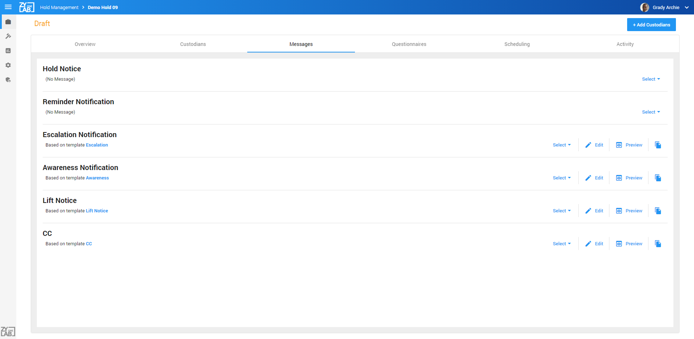
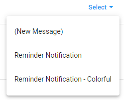
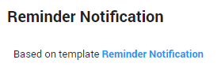
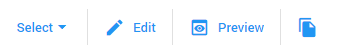
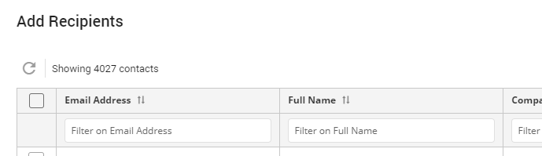
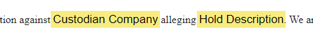
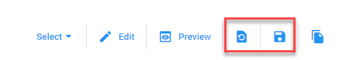

Messages
For each message, select a template or create a new message. Templates can be edited and new messages can be saved as a template.
Templates make it easier to use the same message multiple times. Once all messages are defined, you can issue the Hold.
Please refer to Activity to see how messages are legally relevant.
Click to view full screen image:

Message Types
- Hold Notice
Initial message that describes the hold and informs the custodian. This message can include a questionnaire.
- Reminder Notification
Reminder for the custodian to accept the hold after no response.
- Escalation Notification
Reminder for the custodian and manager of the custodian after no response.
- Awareness Notification
Reminder for the custodian that he/she is still on hold.
- Lift Notice
Message to the custodian that the hold has been lifted.
- CC
A copy of the initial Hold Notice.
Message Actions
Click  to define the Hold Notice or Reminder Notification message that will be sent to the custodians.
to define the Hold Notice or Reminder Notification message that will be sent to the custodians.
By default, templates are selected for all other message types.
-
Select one of the templates, or select (New Message).

-
For each message, you can see if and which template has been selected:

-
Also, you can perform some actions:
- Select another template or create a New Message.
- Edit the selected template.
- Preview the message that will be sent.
- Save the current message or template as a new template; Enter a name for the template and select Apply.
-
When you want to add a new message or edit a template, the email editing page will be opened. Here you'll have all options normally available to you when creating an email.
When creating a new message, it will be empty (see below). When editing a template, it will be filled with the selected template you want to change.
-
At the top, you'll see the message type connected with this message.
-
With the icon in the top right corner you can switch from and to full screen mode.
 Exit full screen
Exit full screen
 Full screen
Full screen
-
Define a subject for the message. This cannot be empty.
-
Define the recipients who should receive a copy of this message when sent; Click the CC button, filter/sort the list with recipients, select one or more recipients and click Add.

-
Set the importance of the message. By default, this is set to Normal.
-
When needed, attach a file.
-
Define the message and use the lay out options available to you. In addition to the commonly known options, you have the possibility to add placeholders.
Placeholders will appear as a link or as yellow highlighted text in the template. Once the message is sent, this will be automatically filled with the information associated with the placeholder.
The content of a placeholder depends on the selected message type.

-
When finished, click Save.
The message will be attached to the message type. If not already a template, you can now save it as one.
- When a template has been edited, two new icons appear: Update from Base Template and Update Base Template.

Update from Base Template will ignore all latest changes and go back to the original template.
Update Base Template will accept all latest changes and update the original template.